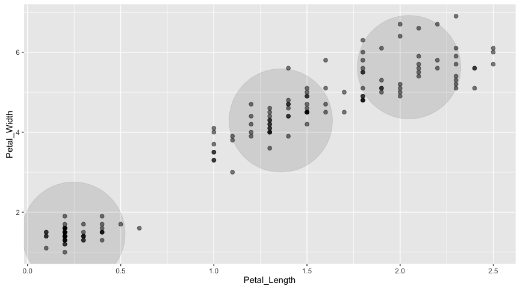
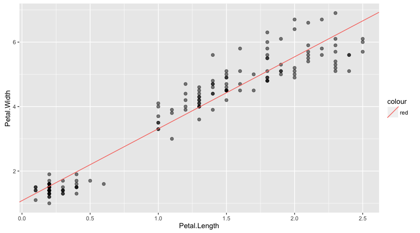
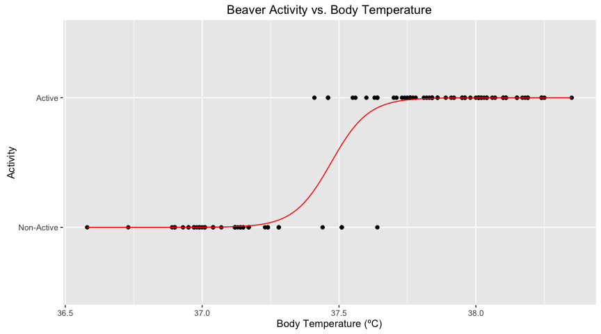
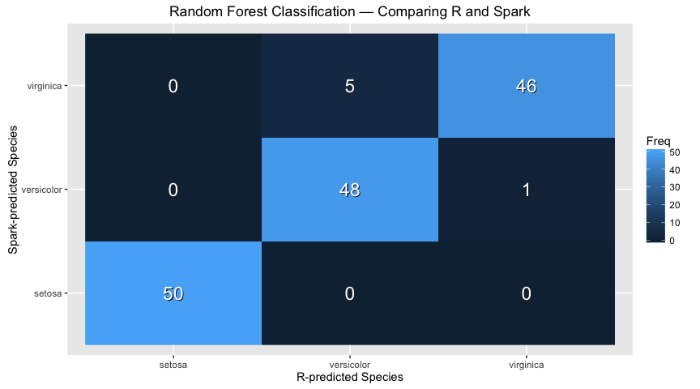
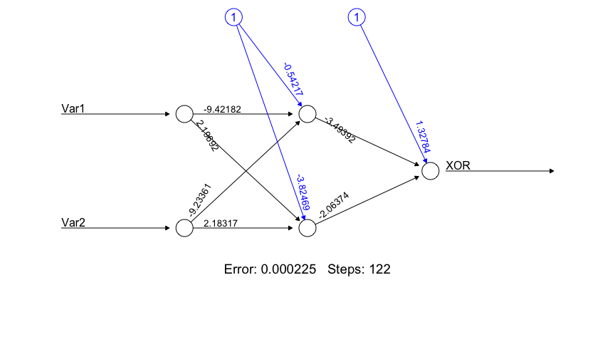

Spark ML: Examples
Initialization
library(sparklyr)
library(dplyr)
##
## Attaching package: 'dplyr'
## The following objects are masked from 'package:stats':
##
## filter, lag
## The following objects are masked from 'package:base':
##
## intersect, setdiff, setequal, union
library(ggplot2)
sc <- spark_connect("local", version = "1.6.1")
iris_tbl <- copy_to(sc, iris, "iris", overwrite = TRUE)
## The following columns have been renamed:
## - 'Sepal.Length' => 'Sepal_Length' (#1)
## - 'Sepal.Width' => 'Sepal_Width' (#2)
## - 'Petal.Length' => 'Petal_Length' (#3)
## - 'Petal.Width' => 'Petal_Width' (#4)
KMeans in R
cl <- iris %>%
select(Petal.Width, Petal.Length) %>%
kmeans(centers = 3)
centers <- as.data.frame(cl$centers)
iris %>%
select(Petal.Width, Petal.Length) %>%
ggplot(aes(Petal.Length, Petal.Width)) +
geom_point(data = centers, aes(Petal.Width, Petal.Length), size = 60, alpha = 0.1) +
geom_point(data = iris, aes(Petal.Width, Petal.Length), size = 2, alpha = 0.5)
KMeans in Spark
model <- iris_tbl %>%
select(Petal_Width, Petal_Length) %>%
ml_kmeans(centers = 3)
iris_tbl %>%
select(Petal_Width, Petal_Length) %>%
collect %>%
ggplot(aes(Petal_Length, Petal_Width)) +
geom_point(data = model$centers, aes(Petal_Width, Petal_Length), size = 60, alpha = 0.1) +
geom_point(aes(Petal_Width, Petal_Length), size = 2, alpha = 0.5)

Linear Regression in R
model <- lm(Petal.Length ~ Petal.Width, data = iris)
iris %>%
select(Petal.Width, Petal.Length) %>%
ggplot(aes(Petal.Length, Petal.Width)) +
geom_point(data = iris, aes(Petal.Width, Petal.Length), size = 2, alpha = 0.5) +
geom_abline(aes(slope = coef(model)[["Petal.Width"]],
intercept = coef(model)[["(Intercept)"]],
color = "red"))

Linear Regression in Spark
model <- iris_tbl %>%
select(Petal_Width, Petal_Length) %>%
ml_linear_regression(response = "Petal_Length", features = c("Petal_Width"))
iris_tbl %>%
select(Petal_Width, Petal_Length) %>%
collect %>%
ggplot(aes(Petal_Length, Petal_Width)) +
geom_point(aes(Petal_Width, Petal_Length), size = 2, alpha = 0.5) +
geom_abline(aes(slope = coef(model)[["Petal_Width"]],
intercept = coef(model)[["(Intercept)"]],
color = "red"))
Logistic Regression in R
# Prepare beaver dataset
beaver <- beaver2
beaver$activ <- factor(beaver$activ, labels = c("Non-Active", "Active"))
# Fit model
model <- glm(activ ~ temp, data = beaver, family = binomial(link = "logit"))
print(model)
##
## Call: glm(formula = activ ~ temp, family = binomial(link = "logit"),
## data = beaver)
##
## Coefficients:
## (Intercept) temp
## -550.53 14.69
##
## Degrees of Freedom: 99 Total (i.e. Null); 98 Residual
## Null Deviance: 132.8
## Residual Deviance: 18.73 AIC: 22.73
# Plot prediction curve
newdata <- data.frame(
temp = seq(min(beaver$temp), max(beaver$temp), length.out = 128)
)
df <- data.frame(
x = newdata$temp,
y = predict(model, newdata = newdata, type = "response") + 1
)
ggplot(beaver, aes(x = temp, y = activ)) +
geom_point() +
geom_line(data = df, aes(x, y), col = "red") +
labs(
x = "Body Temperature (ºC)",
y = "Activity",
title = "Beaver Activity vs. Body Temperature",
subtitle = "From R's built-in 'beaver2' dataset"
)

Logistic Regression in Spark
beaver_tbl <- copy_to(sc, beaver, "beaver", overwrite = TRUE)
model <- beaver_tbl %>%
mutate(response = as.numeric(activ == "Active")) %>%
ml_logistic_regression(response = "response", features = "temp")
print(model)
## Call: response ~ temp
##
## Coefficients:
## (Intercept) temp
## -550.52331 14.69184
Survival Regression in R
library(survival)
data(ovarian, package = "survival")
fit <- survreg(
Surv(futime, fustat) ~ ecog.ps + rx,
data = ovarian,
dist = "weibull"
)
coefficients(fit)
## (Intercept) ecog.ps rx
## 6.8966931 -0.3850425 0.5286455
Survival Regression in Spark
ovarian_tbl <- copy_to(sc, ovarian, overwrite = TRUE)
## The following columns have been renamed:
## - 'resid.ds' => 'resid_ds' (#4)
## - 'ecog.ps' => 'ecog_ps' (#6)
fit <- ovarian_tbl %>%
ml_survival_regression(
response = "futime",
censor = "fustat",
features = c("ecog_ps", "rx")
)
coefficients(fit)
## (Intercept) ecog_ps rx
## 6.8966932 -0.3850426 0.5286455
Partitioning in R
set.seed(1099)
ratio <- 0.75
trainingSize <- floor(ratio * nrow(iris))
indices <- sample(seq_len(nrow(iris)), size = trainingSize)
training <- iris[ indices, ]
test <- iris[-indices, ]
fit <- lm(Petal.Length ~ Petal.Width, data = iris)
predict(fit, newdata = test)
## 1 6 15 16 19 30 33 34
## 1.529546 1.975534 1.529546 1.975534 1.752540 1.529546 1.306552 1.529546
## 35 41 42 50 58 70 75 77
## 1.529546 1.752540 1.752540 1.529546 3.313499 3.536493 3.982481 4.205475
## 84 85 89 90 95 96 97 98
## 4.651463 4.428469 3.982481 3.982481 3.982481 3.759487 3.982481 3.982481
## 99 101 106 108 113 126 128 129
## 3.536493 6.658409 5.766433 5.097451 5.766433 5.097451 5.097451 5.766433
## 130 132 141 144 146 147
## 4.651463 5.543439 6.435415 6.212421 6.212421 5.320445
Partitioning in Spark
partitions <- tbl(sc, "iris") %>%
sdf_partition(training = 0.75, test = 0.25, seed = 1099)
fit <- partitions$training %>%
ml_linear_regression(response = "Petal_Length", features = c("Petal_Width"))
predict(fit, partitions$test)
## [1] 1.743840 1.524058 1.524058 1.524058 3.282310 1.963621 2.183403
## [8] 1.524058 1.524058 1.524058 3.941654 3.282310 1.524058 4.381216
## [15] 3.721872 3.941654 4.161435 4.161435 3.941654 3.941654 3.721872
## [22] 5.260342 4.600998 4.161435 5.040561 6.139468 4.381216 5.699905
## [29] 5.699905 6.139468 5.699905 4.600998 5.699905 6.139468 6.139468
## [36] 5.919686
Principal Components Analysis in R
model <- iris %>%
select(-Species) %>%
prcomp()
print(model)
## Standard deviations:
## [1] 2.0562689 0.4926162 0.2796596 0.1543862
##
## Rotation:
## PC1 PC2 PC3 PC4
## Sepal.Length 0.36138659 -0.65658877 0.58202985 0.3154872
## Sepal.Width -0.08452251 -0.73016143 -0.59791083 -0.3197231
## Petal.Length 0.85667061 0.17337266 -0.07623608 -0.4798390
## Petal.Width 0.35828920 0.07548102 -0.54583143 0.7536574
# calculate explained variance
model$sdev^2 / sum(model$sdev^2)
## [1] 0.924618723 0.053066483 0.017102610 0.005212184
Principal Components Analysis in Spark
model <- tbl(sc, "iris") %>%
select(-Species) %>%
ml_pca()
print(model)
## Explained variance:
## [not available in this version of Spark]
##
## Rotation:
## PC1 PC2 PC3 PC4
## Sepal_Length -0.36138659 -0.65658877 0.58202985 0.3154872
## Sepal_Width 0.08452251 -0.73016143 -0.59791083 -0.3197231
## Petal_Length -0.85667061 0.17337266 -0.07623608 -0.4798390
## Petal_Width -0.35828920 0.07548102 -0.54583143 0.7536574
Random Forests with R
rForest <- randomForest::randomForest(
Species ~ Petal.Length + Petal.Width,
ntree = 20L,
nodesize = 20L,
data = iris
)
rPredict <- predict(rForest, iris)
head(rPredict)
## 1 2 3 4 5 6
## setosa setosa setosa setosa setosa setosa
## Levels: setosa versicolor virginica
Random Forests with Spark
mForest <- iris_tbl %>%
ml_random_forest(
response = "Species",
features = c("Petal_Length", "Petal_Width"),
max.bins = 32L,
max.depth = 5L,
num.trees = 20L
)
mPredict <- predict(mForest, iris_tbl)
head(mPredict)
## [1] "setosa" "setosa" "setosa" "setosa" "setosa" "setosa"
Comparing Random Forest Classification
Using the model to predict the same data it was trained on is certainly not best practice, but it at least showcases that the results produced are concordant between R and Spark.
df <- as.data.frame(table(x = rPredict, y = mPredict), stringsAsFactors = FALSE)
ggplot(df) +
geom_raster(aes(x, y, fill = Freq)) +
geom_text(aes(x, y, label = Freq), col = "#222222", size = 6, nudge_x = 0.005, nudge_y = -0.005) +
geom_text(aes(x, y, label = Freq), col = "white", size = 6) +
labs(
x = "R-predicted Species",
y = "Spark-predicted Species",
title = "Random Forest Classification — Comparing R and Spark")

Neural Networks with R
library(neuralnet)
## Loading required package: grid
## Loading required package: MASS
##
## Attaching package: 'MASS'
## The following object is masked from 'package:dplyr':
##
## select
##
## Attaching package: 'neuralnet'
## The following object is masked from 'package:dplyr':
##
## compute
XOR <- c(0,1,1,0)
xor.data <- data.frame(expand.grid(c(0,1), c(0,1)), XOR)
xor.data
## Var1 Var2 XOR
## 1 0 0 0
## 2 1 0 1
## 3 0 1 1
## 4 1 1 0
net.xor <- neuralnet( XOR~Var1+Var2, xor.data, hidden = 2, rep = 5)
plot(net.xor, rep="best")

Decision Tree with Spark
mDecisionTree <- iris_tbl %>%
ml_decision_tree(
response = "Species",
features = c("Petal_Length", "Petal_Width"),
max.bins = 32L,
max.depth = 5L
)
mPredict <- predict(mDecisionTree, iris_tbl)
head(mPredict)
## [1] "setosa" "setosa" "setosa" "setosa" "setosa" "setosa"
Naive-Bayes with Spark
mNaiveBayes <- iris_tbl %>%
ml_naive_bayes(
response = "Species",
features = c("Petal_Length", "Petal_Width")
)
mPredict <- predict(mNaiveBayes, iris_tbl)
head(mPredict)
## [1] "setosa" "setosa" "setosa" "setosa" "setosa"
## [6] "versicolor"
Cleanup
spark_disconnect(sc)